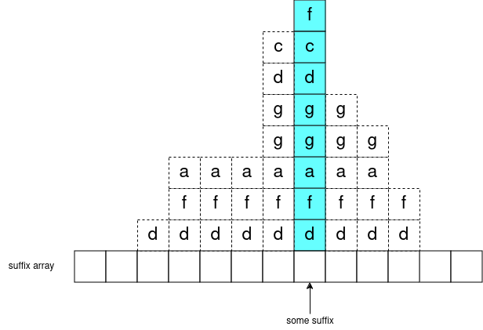
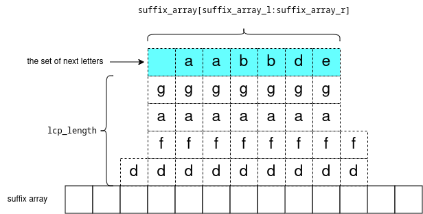
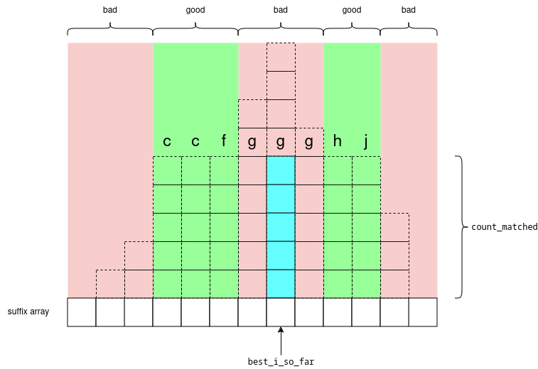

Recently I was learning about how to binary search over suffix array to solve string matching (specifically, single text, multiple patterns, solve it online). Here (1 ("Pattern Query" section), 2, 3) describes how to solve it in \(O(|s| * log(|p|))\) but I'll describe how to improve this to \(O(|s| + log(|p|))\). There already exists resources online about this, but I will try to help visualize it it.
Visualizing Suffix Array
Let's take the text s="\(banana\)", and consider all suffixes (written vertically):
a n a a n a n a n a a n a n a b a n a n a 0 1 2 3 4 5
now let's sort it:
a
a n
n a a
a a n n
n n a a a
a a a b n n
5 3 1 0 4 2
s's suffix array is \([5, 3, 1, 0, 4, 2]\).
Now take any substring of s (like "\(an\)"). Observe there exists a maximal-length subarray of s's suffix array (\([3,1]\)) representing all the suffixes (3 -> "\(ana\)", 1 -> "\(anana\)"`) where "\(an\)" is a prefix. I like to call this the "subarray of matches": as this subarray represents all the starting indexes (in s) of a match.
Let's define a function which calculates this: \(subarrayOfMatches(s[s_l:s_r]) =\) \(suffixArray[suffixArrayL:suffixArrayR]\).
Now observe that \(subarrayOfMatches(s[s_l:s_r+1])\) is nested inside \(subarrayOfMatches(s[s_l:s_r])\). This is because every spot where \(s[s_l:s_r+1]\) is a match, \(s[s_l:s_r]\) is also a match.
But in particular, we can take some suffix (like "\(anana\)") and plug in all of its' prefixes to \(subarrayOfMatches\) and we get a sequence of nested subarrays:
\(subarrayOfMatches(\)"\(a\)"\() = [5,3,1]\)
\(subarrayOfMatches(\)"\(an\)"\() = [3,1]\)
\(subarrayOfMatches(\)"\(ana\)"\() = [3,1]\)
\(subarrayOfMatches(\)"\(anan\)"\() = [1]\)
\(subarrayOfMatches(\)"\(anana\)"\() = [1]\)
in general, you can visualize it like this:
One more point: consider any subarray of the suffix array: \(suffixArray[suffixArrayL:suffixArrayR]\) and let \(lcpLength\) = the longest common prefix of these suffixes. Formally: for each \(i\) in range \([suffixArrayL,suffixArrayR)\) the strings \(s[suffixArray[i]:suffixArray[i]+lcpLength]\) are all equal.
Now consider the set of next letters: \(s[suffixArray[i]+lcpLength]\), they are sorted. We can visualize it like:
Visualizing the Binary Search
Given text s, s's suffix array, and query string p, our goal is to calculate the minimum index i such that p is a prefix of \(s[suffixArray[i]:]\) (the suffix of s starting at \(suffixArray[i]\))
so we can start the binary search as usual with \(l=0,r=size(s),m=(l+r)/2\), and compare p to \(s[suffixArray[m]:]\). if p is less, search lower (\(r=m\)), else search higher (\(l=m\)).
Let's also keep track of the "best" suffix so far, e.g. the suffix which matches the most characters in p. Let's store it as a pair \(\{bestISoFar,countMatched\}\) with the invariant: \(p[:countMatched] == s[bestISoFar:bestISoFar+countMatched]\).
So now, depending on whether \(p[:countMatched+1]\) is less/greater than \(s[bestISoFar:bestISoFar+countMatched+1]\) we want to look for the green section which is before/after \(bestISoFar\). And here, we have the cases taken from here:
- the middle red section will not contain the answer because the pattern p didn't match with that letter \(g\), so it still won't match anywhere in that range.
- the green sections will contain a match which is either better or the same as the middle red section
- the outer red sections won't contain the answer because the LCP is too low
So back to our binary search, we have \(l,r,m=(l+r)/2\).
- If \(m\) lies in either of the red sections; then we can check for this in \(O(1)\) using a lcp query, and continue the search "towards" the green section.
- If \(m\) is already in the green section, then continue matching \(p[countMatched:]\) with \(s[bestISoFar+countMatched:]\) (and also update our best match \(\{bestISoFar,countMatched\}\))
we start comparing characters in p starting from \(countMatched\), so we only compare characters in p once, and achieve complexity \(O(log(|s|) + |p|)\).
code
/**
* @see https://github.com/kth-competitive-programming/kactl /blob/main/content/strings/SuffixArray.h
*
* suffixes of "banana":
* 0 banana 3
* 1 anana 2
* 2 nana 5
* 3 ana 1
* 4 na 4
* 5 a 0
*
* 5 a 0
* |
* 3 ana 1
* |||
* 1 anana 2
*
* 0 banana 3
*
* 4 na 4
* ||
* 2 nana 5
*
* sa = {5, 3, 1, 0, 4, 2}
* sa_inv = {3, 2, 5, 1, 4, 0} (sa[sa_inv[i]] == i, sa_inv[sa[i]] == i)
* lcp = {1, 3, 0, 0, 2}
*
* @code{.cpp}
string s;
auto [sa, sa_inv, lcp] = get_sa(s, 256);
// or
vi a;
auto [sa, sa_inv, lcp] = get_sa(a, 100'005);
* @endcode
*
* @param s,max_num string/array with 0 <= s[i] < max_num
* @returns sa, sa_inv, lcp
* @time O(n + max_num)
* @space vectors `sa`, `sa_inv`, `lcp` are O(n). vector `freq` is O(max_num) and is allocated temporarily
*/
template array, 3> get_sa(const T& s, int max_num) {
int n = (int)size(s);
vector sa(n), sa_inv(begin(s), end(s)), lcp(max(0, n - 1));
iota(begin(sa), end(sa), 0);
for (int ln = 0; ln < n; ln = max(1, 2 * ln)) {
vector tmp(n), freq(max_num);
iota(begin(tmp), begin(tmp) + ln, n - ln);
copy_if(begin(sa), end(sa), begin(tmp) + ln, [&](int& x) { return (x -= ln) >= 0; });
for (int x : sa_inv) freq[x]++;
partial_sum(begin(freq), end(freq), begin(freq));
for_each(rbegin(tmp), rend(tmp), [&](int x) { sa[--freq[sa_inv[x]]] = x; });
swap(sa_inv, tmp);
max_num = 1, sa_inv[sa[0]] = 0;
auto prev_inv = [&](int i) { return pair(tmp[i], i + ln < n ? tmp[i + ln] : -1); };
for (int i = 1; i < (n); i++) {
max_num += prev_inv(sa[i - 1]) != prev_inv(sa[i]);
sa_inv[sa[i]] = max_num - 1;
}
if (max_num == n) break;
}
int sz = 0;
for (int i = 0; i < (n); i++) {
if (sz > 0) sz--;
if (sa_inv[i] == 0) continue;
for (int j = sa[sa_inv[i] - 1]; max(i, j) + sz < n && s[i + sz] == s[j + sz];) sz++;
lcp[sa_inv[i] - 1] = sz;
}
return {sa, sa_inv, lcp};
}
/**
* @code{.cpp}
vector a;
RMQ rmq(a, ranges::min); // -std=c++20
RMQ rmq(a, [&](auto& x, auto& y) { return min(x, y); });
* @endcode
*/
template struct RMQ {
vector> dp;
F op;
/**
* @param a static array
* @param a_op any associative, commutative, idempotent operation
* @time O(n log n)
* @space O(n log n) for `dp` vector
*/
RMQ(const vector& a, F a_op) : dp(1, a), op(a_op) {
for (int i = 0; (2 << i) <= (int)size(a); i++) {
dp.emplace_back((int)size(a) - (2 << i) + 1);
transform(begin(dp[i]), end(dp[i]) - (1 << i), begin(dp[i]) + (1 << i), begin(dp[i + 1]), op);
}
}
/**
* @param le,ri defines range [le, ri)
* @returns a[le] op a[le + 1] op ... op a[ri - 1]
* @time O(1)
* @space O(1)
*/
T query(int le, int ri) {
assert(le < ri);
int lg = __lg(ri - le);
return op(dp[lg][le], dp[lg][ri - (1 << lg)]);
}
};
/**
* subarray of `sa` of matches, and example of longest matching prefix of t in s
*/
struct match {
/**
* t is some string defined by the query
*
* [sa_le, sa_ri) defines subarray of suffix array such that:
* - for all i in [sa_le, sa_ri): t == s.substr(sa[i], sz(t))
* - `sa_ri - sa_le` is the # of matches of t in s.
*
* [s_le, s_ri) defines a substring of s such that:
* - s.substr(s_le, s_ri - s_le) == t.substr(0, s_ri - s_le)
* - (s_ri - s_le) is maximized, if there are multiple answers, s_le is arbitrary
*
* - note if sa_le < sa_ri, i.e. at least one match, then s_ri - s_le == sz(t)
* - note if sa_le == sa_ri, i.e. no matches, then s_ri - s_le < sz(t)
* @{
*/
int sa_le, sa_ri, s_le, s_ri;
/** @} */
};
template struct sa_query {
T s;
int n;
vector sa, sa_inv, lcp;
RMQ> rmq;
sa_query(const T& a_s, const array, 3>& d) : s(a_s), n((int)size(s)), sa(d[0]), sa_inv(d[1]), lcp(d[2]), rmq(lcp, [](int x, int y) { return min(x, y); }) {}
/**
* @time O(nlogn + max_val)
* @space O(nlogn + max_val) used during constructor; but member variables are only O(nlogn)
*/
sa_query(const T& a_s, int max_val) : sa_query(a_s, get_sa(a_s, max_val)) {}
/**
* @param i1,i2 defines suffixes [i1, n), [i2, n)
* - if one of the suffixes is the entire string (i1 == 0 || i2 == 0) then
* it's the same as z algorithm
* - doesn't work when i1,i2 == n
* @returns max integer k such that s.substr(i1, k) == s.substr(i2, k)
* @time O(1)
* @space O(1)
*/
int len_lcp(int i1, int i2) {
if (i1 == i2) return n - i1;
auto [le, ri] = minmax(sa_inv[i1], sa_inv[i2]);
return rmq.query(le, ri);
}
/**
* @param le1,le2 defines suffixes [le1, n), [le2, n)
* - doesn't work when le1,le2 == n
* @returns a number `cmp` where:
* - cmp < 0 iff s.substr(le1) < s.substr(le2)
* - cmp = 0 iff s.substr(le1) = s.substr(le2)
* - cmp > 0 iff s.substr(le1) > s.substr(le2)
* @time O(1)
* @space O(1)
*/
int cmp_sufs(int le1, int le2) {
return sa_inv[le1] - sa_inv[le2];
}
/**
* @see https://stackoverflow.com/a/11374737
* @param t query string
* @returns see match
* @time O(|t| + log(|s|))
* @space O(1)
*/
match find_str_fast(const T& t) {
int s_le = n, s_len = 0;
auto cmp = [&](int i, int) -> bool {
if (int lcp_len = s_le == n ? 0 : len_lcp(i, s_le); lcp_len != s_len)
return (lcp_len < s_len) ^ (cmp_sufs(s_le, i) < 0);
auto [it_s, it_t] = mismatch(i + s_len + begin(s), end(s), s_len + begin(t), end(t));
s_le = i, s_len = it_t - begin(t);
return lexicographical_compare(it_s, end(s), it_t, end(t));
};
int sa_le = lower_bound(begin(sa), end(sa), 0, cmp) - begin(sa), sa_ri = sa_le;
if (s_len == (int)size(t))
sa_ri = lower_bound(sa_le + begin(sa), end(sa), 0, [&](int i, int) -> bool { return len_lcp(i, s_le) >= (int)size(t); }) - begin(sa);
return {sa_le, sa_ri, s_le, s_le + s_len};
}
};